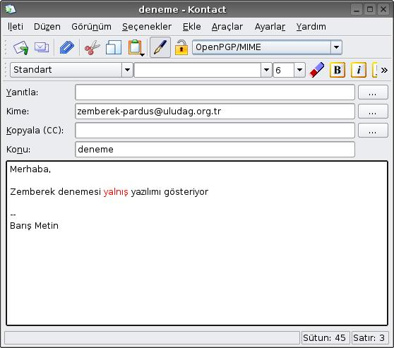
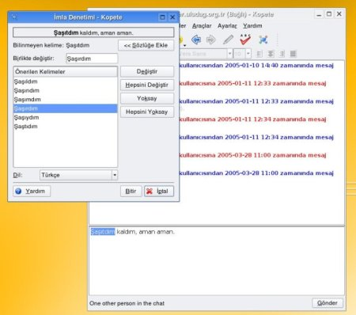

Zemberek Pardus
Zemberek Pardus
Zemberek Pardus project aims to combine Zemberek Turkish natural language processing software with Pardus and softwares in it.
Project's goal is to respond to requirements of Pardus's spell checking and grammatical control by using lowest system sources.
Scope
The following job descriptions are valid under the project.
- To determine ZemberekServer protocol.
- To add ZemberekServer to Pardus as a service.
- To provide the softwares which needs spell checking to use Zemberek.
 Screenshots
Screenshots
|  |
 |
|  |
 |
Mailing Lists
http://liste.pardus.org.tr/mailman/listinfo/zemberek-pardus
Download
zpspell: Proxy client for ZemberekServer.
KDE patch: This patch is for KDE based applications to make them use Zemberek.
Information and documents on Pardus web pages can be used freely anywhere with original source credit.
For information and suggestion(s) please write to info_at_pardus.org.tr
TÜBİTAK - UEKAE, PK.74 41470, Gebze / Kocaeli.